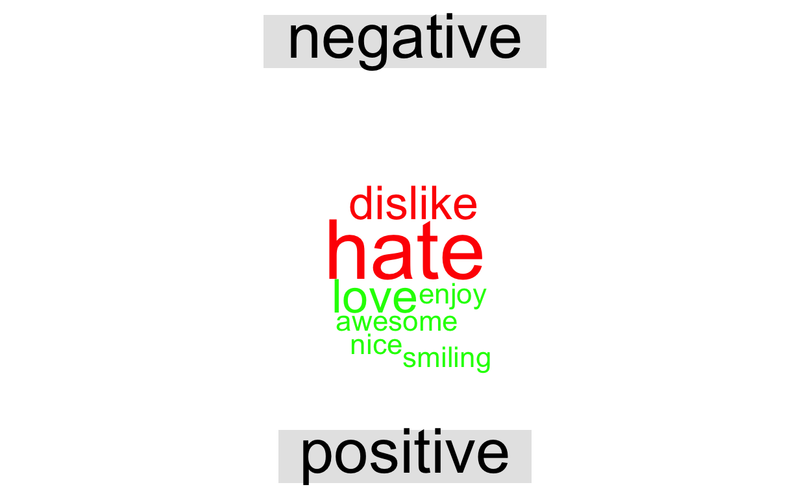

Here is a tutorial for some of the key functions in the tidytext R package. We show examples of how these functions aid with text analysis on a small dataset, and we then provide some exercises using data of Russian Troll Tweets for you to try on your own.
Today, we will talk about the TidyText package. The tidytext packages allows us to effectively do text mining tasks by converting text data into tidy formats. We can then incorporated these tidy data sets with other tools in data science or machine learning.
In this tutorial, we will explain some of the key functions used in the tidytext package by using a simple example. We will then ask you to work on questions using a different data set: Russian Troll Tweets.
Loading Libraries
First, as always, we have to load libraries and install packages. You will encounter some familiar packages, but the main libraries required to do text mining with tidytext are listed below:
Looking at the Data Set
After loading all the relevant libraries, we will look at a simple data set that we created. The text data set includes 9 different sentences or strings.
text<-c("Lisa is awesome","I love Data Science","I hate cilantro", "I dislike vegetables", "I enjoy smiling", "I hate exams", "I love travelling", "The weather is so nice!", "Can I have an apple?")
text
[1] "Lisa is awesome" "I love Data Science"
[3] "I hate cilantro" "I dislike vegetables"
[5] "I enjoy smiling" "I hate exams"
[7] "I love travelling" "The weather is so nice!"
[9] "Can I have an apple?" The first task before doing text analysis is converting our data set into a tibble data frame by using the tibble function. A tibble is just another class of data frames in R, which allows us to work with tidy functions, as it does not convert strings to factors or use row names.
Take a look at how we were able to achieve this below:
# Converting to a tibble data frame
text_df<- tibble(line = 1:length(text), text = text)
# Tibble data frame
text_df
# A tibble: 9 x 2
line text
<int> <chr>
1 1 Lisa is awesome
2 2 I love Data Science
3 3 I hate cilantro
4 4 I dislike vegetables
5 5 I enjoy smiling
6 6 I hate exams
7 7 I love travelling
8 8 The weather is so nice!
9 9 Can I have an apple? After we successfully convert our data set into a tibble data frame, we want to extract individual words and put them into a data frame so that each row has one token.
Each token can be interpreted as a word or unit of text. By utilizing tidytext’s unnest_tokens function, we can break the text into individual tokens. This process is also known as the tokenization process. Note that this function eliminates all the punctuation marks.
# Tokenization process
text_unnest <- text_df %>%
unnest_tokens(word, text)
# Tokenized data
text_unnest
# A tibble: 32 x 2
line word
<int> <chr>
1 1 lisa
2 1 is
3 1 awesome
4 2 i
5 2 love
6 2 data
7 2 science
8 3 i
9 3 hate
10 3 cilantro
# … with 22 more rowsAs we see above, the unnest_tokens function takes in two parameters. The first parameter, the output column, will be the name of the output column or individual words. In our exercise, we will call it word.
The second parameter will take the tokenized column name from the tibble data frame.
Before starting our text analysis, we will also have to exclude stop words such as “is”, “I”, “the”, “about”, “an”, “the”, etc. The tidytext package provides a tibble data set called stop_words that includes different stop words.
You can take a peek at some of the stop words in the stop_words data set:
# Look at the stop words data set
head(stop_words)
# A tibble: 6 x 2
word lexicon
<chr> <chr>
1 a SMART
2 a's SMART
3 able SMART
4 about SMART
5 above SMART
6 according SMART Finally, we will use a familiar function, anti_join, to clean the data set. This is the last step of the data cleaning process that we need to do before moving forward with the analysis. By joining the two data sets, stop_words and text_unnest, we can arrive at a clean data set.
# Join the two data sets together to only extract meaningful words
text_clean <- text_unnest %>%
anti_join(stop_words)
# Cleaned data set
text_clean
# A tibble: 18 x 2
line word
<int> <chr>
1 1 lisa
2 1 awesome
3 2 love
4 2 data
5 2 science
6 3 hate
7 3 cilantro
8 4 dislike
9 4 vegetables
10 5 enjoy
11 5 smiling
12 6 hate
13 6 exams
14 7 love
15 7 travelling
16 8 weather
17 8 nice
18 9 apple
With the cleaned version of the data, we will begin our analysis. In this tutorial, we mainly focus on the sentiment analysis and creating relevant visualizations using word cloud
Sentiment Analysis
Before beginning the sentiment analysis, let’s take a step back and understand the purpose of sentiment analysis. Sentiment analysis “provides a way to understand the attitudes and opinions expressed in texts”.
To conduct sentiment analysis, we will be first looking at the get_sentiments(). By using this function within the tidytext package, we can look at words with negative and positive sentiments. Note that this function takes in a lexicon parameter. There are three sentiment lexicons that we can use:
bing (default): positive vs. negative
nrc: assigns yes vs. no to positive, negative, anger, anticipation, disgust, fear, joy, sadness, surprise, and trust cateogries.
AFINN: assigns scores from -5 to 5 depending on the sentiment of the word.
For this tutorial, we will use bing for simplicity. Feel free to play with other lexicons.
# Sentiments
sentiments <- get_sentiments("bing")
# Negative words
sentiments %>%
filter(sentiment == "negative") %>%
head()
# A tibble: 6 x 2
word sentiment
<chr> <chr>
1 2-faces negative
2 abnormal negative
3 abolish negative
4 abominable negative
5 abominably negative
6 abominate negative # A tibble: 6 x 2
word sentiment
<chr> <chr>
1 abound positive
2 abounds positive
3 abundance positive
4 abundant positive
5 accessable positive
6 accessible positive Next, to figure out the sentiment for each word, we will join the two data sets: sentiments and text_clean. Note that some words in the text_clean data set are dropped i.e., “exams”, “weather”, “apple”, etc.
sentiment_data <- text_clean %>%
inner_join(sentiments)
sentiment_data
# A tibble: 9 x 3
line word sentiment
<int> <chr> <chr>
1 1 awesome positive
2 2 love positive
3 3 hate negative
4 4 dislike negative
5 5 enjoy positive
6 5 smiling positive
7 6 hate negative
8 7 love positive
9 8 nice positive Using this sentiment data, we will now begin the sentiment analysis by using some functions that we already know.
sentiment_data %>%
count(sentiment)
# A tibble: 2 x 2
sentiment n
<chr> <int>
1 negative 3
2 positive 6From above, We see that there are 3 negative words and 6 positive words.
Making cool visualizations using WordCloud
With the above analysis in mind, we can also create interesting visualizations using the wordcloud package.
Using the text_clean data (without sentiments), we can create this nice visualization which shows us all the words in the data set. Note that the size of “hate” and “love” are bigger than other words. This is because they appear more than other words.
Using the data set that includes sentiments, we can also create a similar visualization.
sentiment_data %>%
count(word, sentiment, sort = TRUE) %>%
acast(word ~ sentiment, value.var = "n", fill = 0) %>%
comparison.cloud(colors = c("red", "green"))

Compared to the first wordcloud visualization, this one allows us to make a comparison. Through this visualization, we can understand what words have positive and negative associations and what words appear more than the others within their specific groups.
tidytext packageFor the purpose of this tutorial, we selected some of the tidytext functions. However, there are many more functions that you might be interested in using for your final project if your group were to do some text mining and analysis.
Other functions and their documentations can be found in the link below:
https://cran.r-project.org/web/packages/tidytext/tidytext.pdf
Now you will try using tidytext on a new dataset about Russian Troll tweets.
These are tweets from Twitter handles that are connected to the Internet Research Agency (IRA), a Russian “troll factory.” The majority of these tweets were posted from 2015-2017, but the datasets encompass tweets from February 2012 to May 2018.
Three of the main categories of troll tweet that we will be focusing on are Left Trolls, Right Trolls, and News Feed. Left Trolls usually pretend to be BLM activists, aiming to divide the democratic party (in this context, being pro-Bernie so that votes are taken away from Hillary). Right trolls imitate Trump supporters, and News Feed handles are “local news aggregators,” typically linking to legitimate news.
For our upcoming analyses, some important variables are:
Variable documentation can be found on Github and a more detailed description of the dataset can be found in this fivethirtyeight article.
Because there are 12 datasets containing 2,973,371 tweets sent by 2,848 Twitter handles in total, we will be using three of these datasets (one from a Right troll, one from a Left troll, and one from a News Feed account).
1. Read in Troll Tweets Dataset
# Download the file from github and place in the same project folder
troll_tweets<- read.csv("IRAhandle_tweets_12.csv")
2. Basic Data Cleaning and Exploration
3. Unnest Tokens
We want each row to represent a word from a tweet, rather than an entire tweet.
troll_tweets_untoken <- troll_tweets1 %>%
unnest_tokens(???,???)
troll_tweets_untoken
4. Remove stopwords
#get rid of stopwords (the, and, etc.)
troll_tweets_cleaned <- troll_tweets_untoken %>%
anti_join(stop_words)
Take a look at the troll_tweets_cleaned dataset. Are there any other words/letters/numbers that we want to eliminate that weren’t taken care of by stop_words?
#get rid of http, https, t.co, rt, amp, single number digits, and singular letters
troll_tweets_cleaned <- troll_tweets_cleaned %>%
filter(word != ????)
5. Look at a subset of the tweets to see how often the top words appear.
troll_tweets_small <- troll_tweets_cleaned %>%
count(??) %>%
slice_max(order_by = n, n = 50) # 50 most occurring words
# visualize the number of times the 50 top words appear
ggplot(troll_tweets_small, aes(y = fct_reorder(word,n), x = n)) +
geom_col()
6. Sentiment Analysis
# look at sentiment
get_sentiments("bing")
# assign a sentiment to each word that has one associated
troll_tweets_sentiment <- troll_tweets_cleaned %>%
inner_join(???)
# count the sentiments
troll_tweets_sentiment %>%
???7. Using the troll_tweets_small dataset, make a wordcloud:
# make a wordcloud where the size of the word is based on the number of times the word appears across the tweets
troll_tweets_small %>%
with(wordcloud(word, n, max.words = ??))
# make a wordcloud colored by sentiment
troll_tweets_sentiment %>%
acast(word ~ sentiment, value.var = "n", fill = 0) %>%
comparison.cloud(colors = c(??,??),
max.words = ??)Are there any words whose categorization as “positive” or “negative” surprised you?
https://cran.r-project.org/web/packages/tidytext/tidytext.pdf
https://fivethirtyeight.com/features/why-were-sharing-3-million-russian-troll-tweets